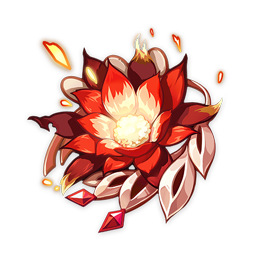

Genshin Impact · Versión 7.2
Análisis del Rol y Escalado
Xiangling es un personaje de elemento Pyro originario de Liyue que utiliza Lanza y se posiciona en el tier T1 (A+) Sub-DPS dentro del rol de Reina del Sub-DPS Pyro Off-Field (Pyronado Sin ICD). Su rendimiento en combate gira en torno a este eje principal: Pyronado hace Snapshot del buff de Bennett y no tiene ICD.
Para maximizar su aporte en el equipo, la configuración prioritaria combina La Captura con el conjunto de artefactos Emblema del Destino (4 piezas), respetando la jerarquía de estadísticas 1. Recarga de Energía% (180% - 220% ER) > 2. Prob. Crítica / Daño Crítico (1:2) > 3. Maestría Elemental (150 – 250 EM) > 4. ATQ% y subiendo sus habilidades en orden: Definitiva (Q) >>> Habilidad Elemental (E) >>> Ataques Normales (No subir).
Mejores Armas
Opciones recomendadas ordenadas por rendimiento según el meta actual y compatibilidad con sus rotaciones:
-
 La Captura ★★★★Opción por rolGratis pescando en Inazuma: +45.9% ER, +32% Daño en Q y +12% CR en Q.
La Captura ★★★★Opción por rolGratis pescando en Inazuma: +45.9% ER, +32% Daño en Q y +12% CR en Q. -
 Báculo de las Arenas Escarlatas ★★★★★Opción por rolArenas Escarlatas convierte su EM en ATQ masivo.
Báculo de las Arenas Escarlatas ★★★★★Opción por rolArenas Escarlatas convierte su EM en ATQ masivo. -
 Báculo de Homa ★★★★★Opción por rol+66.2% Daño Crítico y sólido ATQ adicional para maximizar Pyronado.
Báculo de Homa ★★★★★Opción por rol+66.2% Daño Crítico y sólido ATQ adicional para maximizar Pyronado. -
 Lanza de Favonius ★★★★Opción por rolSi el equipo tiene problemas de recarga.
Lanza de Favonius ★★★★Opción por rolSi el equipo tiene problemas de recarga. -
 Perdición del Dragón ★★★★Opción por rolEnorme daño en Vaporizado si ya tiene ~200% ER en artefactos.
Perdición del Dragón ★★★★Opción por rolEnorme daño en Vaporizado si ya tiene ~200% ER en artefactos.
Mejores Sets de Artefactos
Combinaciones de 4 piezas o mezclas de 2 piezas para maximizar su contribución:
-
 Emblema del Destino (4 piezas) BiS Indiscutible
Emblema del Destino (4 piezas) BiS IndiscutibleConvierte su alta recarga en hasta +75% de bono de daño para el Pyronado.
-

Bruja Carmesí en Llamas (4 piezas) Alternativa Vape+15% Bono Pyro y +15% Daño en Vaporizados.
Estadísticas Principales y Secundarias
Atributos prioritarios en artefactos para un balance óptimo de daño o soporte:
| Pieza | Estadística Principal |
|---|---|
| Reloj (Arenas) | Recarga de Energía% o ATQ% |
| Cáliz | Bono Daño Pyro% |
| Corona | Prob. Crítica% / Daño Crítico% |
Prioridad de Subestadísticas
- 1. Recarga de Energía% (180% - 220% ER)
- 2. Prob. Crítica / Daño Crítico (1:2)
- 3. Maestría Elemental (150 – 250 EM)
- 4. ATQ%
Prioridad de Talentos
Definitiva (Q) >>> Habilidad Elemental (E) >>> Ataques Normales (No subir)
Objetivos de Estadísticas (Nivel 90)
Las metas numéricas exactas de Xiangling varían según el arma equipada, los refinamientos y la generación de partículas de su equipo.
Prioriza cumplir primero la Recarga de Energía necesaria para mantener la rotación fluida de su Habilidad Definitiva antes de buscar subestadísticas ofensivas adicionales.
Con piezas principales de Recarga de Energía% o ATQ%, Bono Daño Pyro% y Prob. Crítica% / Daño Crítico%, enfoca tu farmeo de artefactos en: 1. Recarga de Energía% (180% - 220% ER) > 2. Prob. Crítica / Daño Crítico (1:2) > 3. Maestría Elemental (150 – 250 EM) > 4. ATQ% (Pyronado hace Snapshot del buff de Bennett y no tiene ICD).
Talentos de Combate y Materiales (Nivel 1 al 10)
Habilidades principales de Xiangling y desglose exacto de libros, materiales y Mora para mejorar sus talentos:


Composiciones de Equipo Recomendadas
Alineaciones con mayor sinergia elemental y amplificación de daño en el Abismo y Teatro Fantasía:
Raiden National (Rational)
Raiden Shogun • Xiangling • Xingqiu • Bennett
Sukokomon
Kokomi • Xiangling • Fischl • Sucrose
Materiales de Ascensión (Nivel 1 al 90)
Recursos totales requeridos para desbloquear las 6 fases de ascensión de Xiangling. Coste total de Mora en ascensiones: 420.000 Mora.


Sinergias y Guías Relacionadas
Explora las fichas de armas, artefactos y materiales de los principales compañeros de equipo para Xiangling: